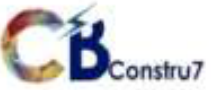
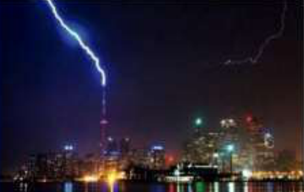

Para-raios e SPDA
Instalação, manutenção, análise de risco e projetos de Sistemas de Proteção contra Descargas Atmosféricas.
Conheça os serviços →
Fale com a equipe ↗PROTEÇÃO QUE COMEÇA COM PREVENÇÃO
Instalação, manutenção e avaliação de para-raios. Cuide da proteção da sua edificação com a CB Constru7.
Solicitar uma avaliação ↗01 / NOSSOS SERVIÇOS
Da instalação à documentação técnica, soluções para cuidar dos sistemas de proteção e das instalações elétricas.
Instalação, manutenção, análise de risco e projetos de Sistemas de Proteção contra Descargas Atmosféricas.
Conheça os serviços →Projetos elétricos, aterramento, equipotencialização e proteção interna contra surtos.
Converse com a equipe →Laudos de conformidade, registros fotográficos, testes e serviços relacionados à renovação de AVCB.
Veja o que está incluído →
PROTEÇÃO EXTERNA + PROTEÇÃO INTERNA02 / ATENÇÃO AO SEU PARA-RAIOS
O tempo e a falta de manutenção podem comprometer o sistema. Uma avaliação técnica ajuda a identificar as condições da instalação e as adequações necessárias.
03 / LAUDOS E INSPEÇÕES
Conheça os serviços de inspeção e documentação apresentados pela CB Constru7. O escopo é definido conforme a avaliação da edificação.
Avaliação técnica das condições do sistema.
Registro das condições observadas na inspeção.
Continuidade elétrica e resistência ôhmica.
Certificado de calibração e ART por engenheiro eletricista habilitado, conforme o serviço.
VAMOS CONVERSAR?
Conte o que sua edificação precisa.
Fale com a CB Constru7 para solicitar um orçamento.